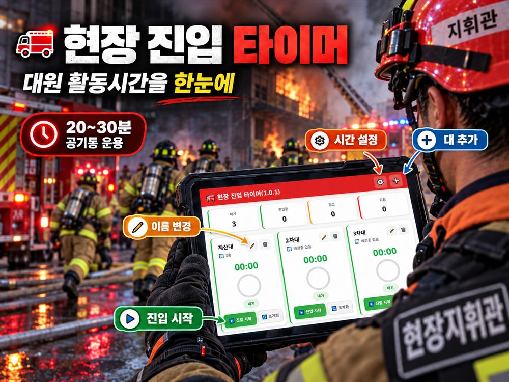

등록된 대가 없습니다.

진입한 대원의 활동시간을압력계처럼 한눈에
바늘이 노랑에 들어가면 경고, 빨강이면 위험입니다.
먼저 오늘의 출동대편성표를 불러와 주세요.
여기서 안전센터를 먼저 눌러 주세요.
여기서 차량을 눌러 주세요. 차량을 골라야 저장됩니다.
지하층은 앞에 - 를 붙여 주세요. 예) 지하 2층 → -2
층 또는 구역을 넣어야 저장됩니다.
정말로 실행하시겠습니까?